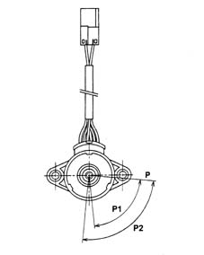
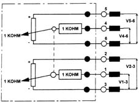

1056BM Check operation of accelerator pedal potentiometer
- Path
- Test > 10 ENGINE > 1056 PETROL INJECTION SYSTEM > 1056B multi-point injection system (mpi) > 1056BM Check operation of accelerator pedal potentiometer
- Kind
- test / check procedure
- Applies to
- engines: 2.5 V6; all production periods
- Interactive page
- https://sloeber94.github.io/elrnDB-a156/en/#/3239138
Applies to: engines: 2.5 V6; all production periods
The operational check should be carried out for three accelerator pedal potentiometer positions.

P, 0° (idle) P1, 0° - 70° (operating range) P2, 88° (internal mechanical stop)
Make sure that the ignition is in the OFF position, then disconnect the negative battery terminal (refer to op. 5530B10 battery - r+r ).
Disconnect the electrical connection from the accelerator pedal potentiometer.
 | Name | Connector |
|---|---|---|
- | Accelerator pedal potentiometer |
Check that the voltage ratio measured between pins 1-3 and 2-3 and between pins 4-6 and 5-6, in the three angular positions 80°, 70°, 0°, is 0.813 ± 0.04, 0.660 ± 0.04, 0.080 ± 0.01, respectively.
